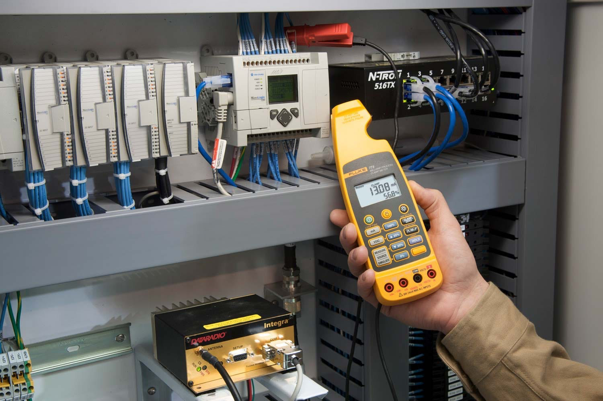
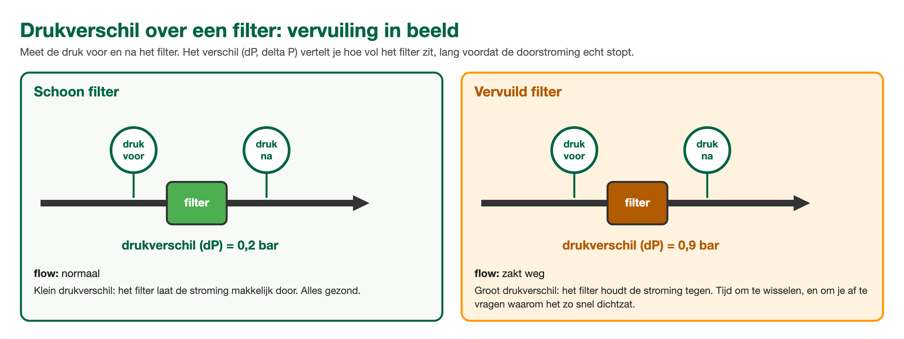

ANA Module 5
4.1 Leerdoelen
Na het volgen van dit hoofdstuk kun je:
- Uitleggen waarom je een vermoeden altijd controleert met een meting
- Beschrijven wat je met een multimeter kunt controleren in een meetkring
- Uitleggen hoe flow en drukverschil je vertellen waar een doorstromingsprobleem zit
- De diagnose-informatie van het besturingssysteem zelf benoemen als meetgereedschap
- Aangeven wat een meting wel en niet bewijst
4.2 Meten is weten, gokken is hopen
Na het inperken uit hoofdstuk 2 heb je een vermoeden: de fout zit waarschijnlijk daar. Een vermoeden is nog geen bewijs. Het verschil tussen een technicus en een gokker is dat de technicus zijn vermoeden controleert met een meting voordat hij iets vervangt of openmaakt. Onderdelen wisselen tot de storing weg is, is duur, traag en gevaarlijk: je weet aan het eind niet eens wat er nou echt mis was.
⚠️ Eerst de spelregels: meten in een installatie doe je alleen als je weet wat je doet en het jouw taak is. Op school betekent dat: in overleg met de docent. In een bedrijf: binnen je bevoegdheid, vaak met een werkvergunning, en bij twijfel samen met de technische dienst. Een verkeerde meting in een verkeerde kast kan een proces platleggen of jou raken.
4.3 De multimeter: de vraagbaak voor elektrische kringen
De multimeter is het bekendste stuk meetgereedschap in de kist. Voor storing zoeken gebruik je hem vooral om drie vragen te beantwoorden:
🔋 Is er voeding?
Spanning meten over de aansluitklemmen. Geen voeding betekent: verder terugzoeken richting de bron (zekering, voedingskaart, kabel).
📶 Loopt het signaal?
Veel metingen in de industrie reizen als een stroompje van 4 tot 20 milliampère (mA): 4 mA staat voor de laagste meetwaarde, 20 mA voor de hoogste. Meet je in de kring bijvoorbeeld 12 mA, dan zegt de sensor 'ik zit op de helft'. Meet je 0 mA, dan is de kring onderbroken: kabelbreuk, losse klem of een dode sensor.
🔗 Is de verbinding heel?
Met de weerstands- of piepstand controleer je of een draad van A naar B doorloopt. Alleen op een spanningsloze kring!
Handig om te onthouden: juist omdat 4 mA (en niet 0) de laagste meetwaarde is, kan het systeem kabelbreuk herkennen. Valt de stroom naar 0, dan weet het systeem: dit is geen lage meetwaarde, dit is een kapotte kring. Daarom zie je bij zo'n storing vaak een foutmelding in plaats van gewoon een lage waarde.

Het signaal meten zonder de kring los te nemen: een mA-tang om een ader van de lus. Hier staat 13,08 mA, dat is 56,8 procent van het meetbereik. Foto: Fluke
🔍 Kennischeck: Je meet 0 mA in een 4-20 mA meetkring. Wat weet je nu?
A) De sensor meet de laagste waarde van zijn meetbereik
B) De meting staat precies op de helft van het meetbereik
C) De meter staat verkeerd ingesteld, want 0 mA bestaat niet
D) De kring is onderbroken: kabelbreuk, losse klem of een dode sensor
4.4 Flow en drukverschil: waar stroomt het niet?
Veel installaties draaien om doorstroming: proceswater, product, lucht, of het monster op weg naar een analyzer. Stokt de doorstroming, dan zijn twee metingen je beste vrienden:
- De flowmeter. Laat direct zien of er nog doorstroming is en hoeveel. Een simpele rotameter (het buisje met het zweefkogeltje) is al genoeg om 'stroomt wel' van 'stroomt niet' te onderscheiden, en dat is bij het inperken vaak precies de vraag.
- Het drukverschil. Meet de druk voor en na een onderdeel, bijvoorbeeld een filter. Het verschil tussen die twee heet het drukverschil, afgekort dP (delta P). Een schoon filter geeft een klein drukverschil; een vervuild filter een groot. Zo zie je vervuiling lang voordat de doorstroming echt stopt.
📖 Praktijkvoorbeeld: de flow die langzaam wegzakte
De doorstroming door een leiding met een filter zakt over drie weken langzaam terug. De vraag is: vervuilt het filter, of hapert de pomp?
1. Kijk naar het drukverschil over het filter: dat is gestegen van 0,2 naar 0,9 bar.
2. Kijk naar de druk direct na de pomp: die is al die tijd gelijk gebleven.
3. Conclusie: de pomp levert nog gewoon, maar het filter zit dicht. Filter wisselen, flow herstelt.
En de grondoorzaak-vraag uit hoofdstuk 3 hoort er meteen bij: waarom zat dat filter zo snel dicht? Ander product? Vervuiling in de aanvoer? Filterinterval te lang?

Zelfde filter, ander verhaal: het drukverschil verklapt de vervuiling ruim voordat de flow stopt.
🔍 Kennischeck: De flow zakt langzaam weg. Het drukverschil over het filter steeg van 0,2 naar 0,9 bar; de druk direct na de pomp bleef gelijk. Wat is er aan de hand?
A) De pomp levert steeds minder en moet gereviseerd worden
B) Het filter zit bijna dicht en houdt de stroming steeds meer tegen
C) Er zit lucht in de leiding waardoor de flowmeter te laag aanwijst
D) De flowmeter zelf is defect en wijst daarom steeds lager aan
4.5 Het systeem meet al voor je: trends en diagnose
Vergeet bij al het handgereedschap niet dat het grootste meetinstrument al aan staat: het besturingssysteem zelf. Twee dingen levert het je gratis:
- Trends. In hoofdstuk 1 zag je de vier patronen (sprong, drift, vlakke lijn, onrust). Tijdens de diagnose gebruik je trends om je vermoeden te toetsen: klopt het tijdstip? Bewegen andere metingen mee?
- Systeemdiagnose. Moderne besturingssystemen bewaken zichzelf: ze melden welke kaart, welk kanaal of welke verbinding een fout geeft, en veel apparaten geven een eigen statuscode. Leer die schermen lezen; het systeem wijst je vaak rechtstreeks naar het zieke onderdeel. Hoe dat er precies uitziet verschilt per merk en systeem, en dat leer je bij de praktijkopdrachten op de installatie zelf.
4.6 Wat zegt een meting wel en niet?
Een meting voelt als de waarheid, maar ook hier is denkwerk nodig:
- Een meting is een momentopname. Een storing die af en toe optreedt kan precies op jouw meetmoment even weg zijn. Meet vaker, of pak de trend erbij.
- Meet op de juiste plek. Een goede waarde halverwege de keten bewijst alleen dat het tot daar goed zit, niet dat de rest ook klopt.
- Vertrouw je meetinstrument niet blind. Een lege batterij of een verkeerde meetstand geeft rustig een 'meetwaarde'. Twijfel je aan je meter: check hem eerst op een punt waarvan je de waarde zeker weet.
4.7 Samenvatting
✅ Dit neem je mee
- Controleer vermoedens met een meting voordat je iets vervangt: wisselen tot het werkt is geen diagnose.
- Multimeter: voeding aanwezig, signaal aanwezig (4-20 mA), verbinding heel. Weerstand alleen spanningsloos meten.
- Flow en drukverschil wijzen doorstromingsproblemen aan; een stijgend drukverschil over een filter is vervuiling in beeld.
- Het besturingssysteem is zelf je grootste meetinstrument: trends en systeemdiagnose staan al voor je klaar.
- Een meting is een momentopname op een plek: kies plek en moment bewust, en vertrouw je meter pas na een controle.